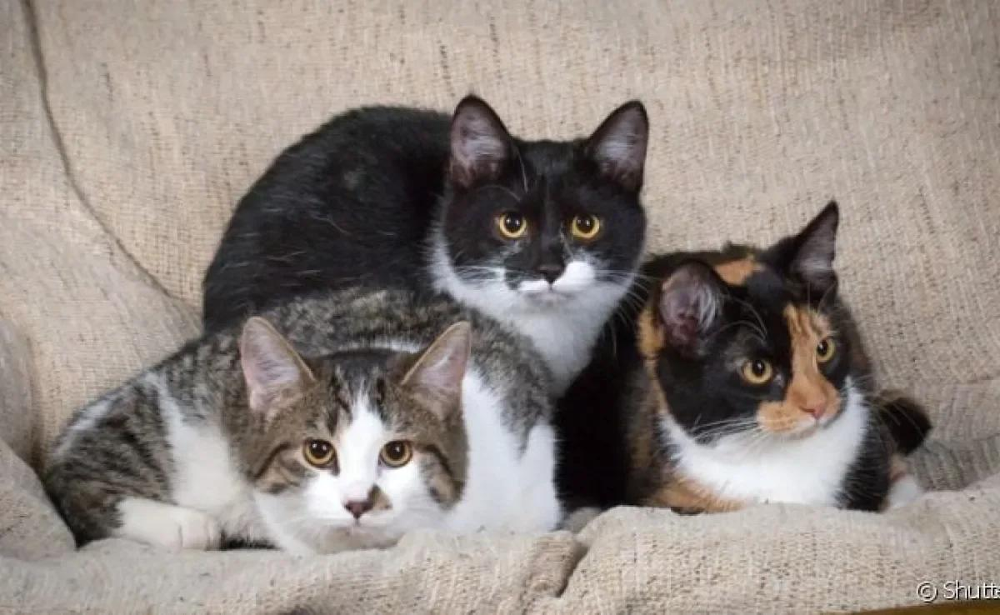
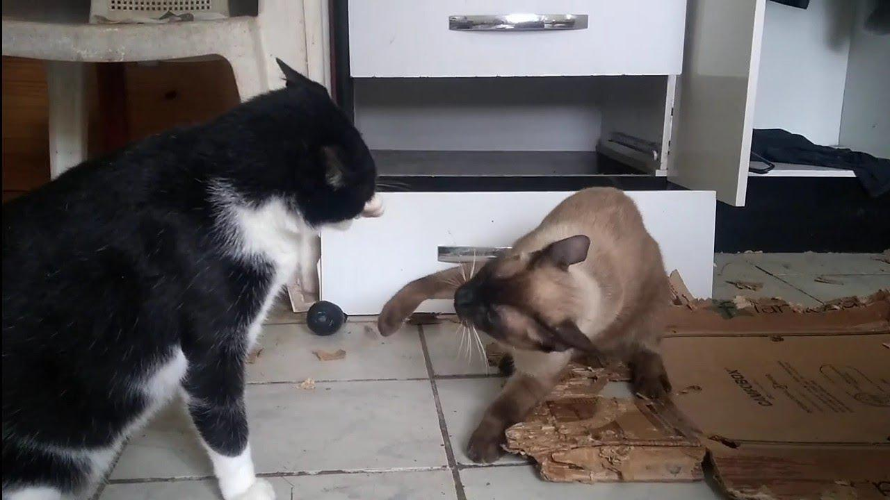

Marina foi em um centro de adoção em sua cidade com a intenção de adotar uma gato para fazer companhia ao seu frajolinha. Este estava ficando velinho e, por ficar muito tempo sozinho, precisava de uma companhia. Chegando lá, ela se deparou com vários gatinhos de cores, tamanhos, idades e histórias diferentes. A vontade era de levar todos para casa, mas como o orçamento era curto, podia escolher apenas um. Após muito pensar, ela decidiu que o que melhor se adaptaria ao novo lar e a convivência com seu idosinho seria o:

Se deu bem com o frajola, já que é tranquilo e equilibra a bagunça do outro
Os dois explodiram o apartamento de Marina

Não se deram, saíram na mão na primeira semana